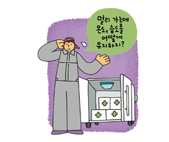
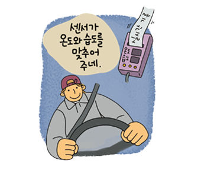
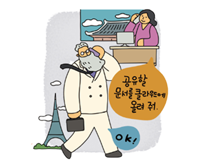
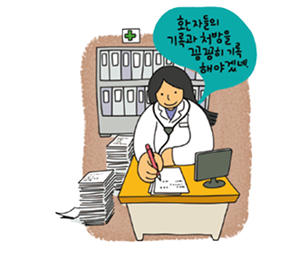
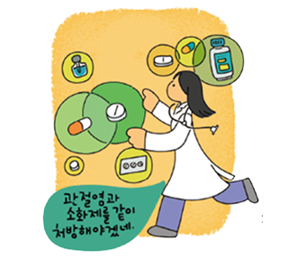
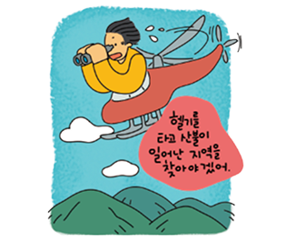
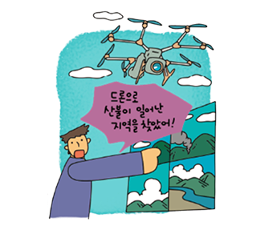

개념 학습
사회의 모습을 바꾼 디지털 기술
최근 주목받고 있는 사물 인터넷, 클라우드, 빅데이터, 인공지능 등의 디지털 기술은 사회의 모습을 빠르게 바꾸고 있다. 디지털 기술이 여러 분야에 활용되면서 컴퓨터나 스마트폰과 같은 전자 기기를 한 사람이 여러 대 사용하는 모습도 쉽게 찾아볼 수 있다.
디지털 기술로 변한 사회의 모습
일상생활에서 사용되는 여러 가지 사물이 사물 인터넷을 통해 일종의 단말기가 되어 사물끼리 네트워크를 만들 수 있게 되었다. 사물 인터넷은 농업, 도시 설계, 가전제품 제작 등 다양한 분야에서 활용되고 있다.
적용의 예

안전하게 의약품을 배송하기 위해 사물 인터넷을 적용한다면?

센서가 온도, 습도를 감지하여 적정 온도와 습도를 맞춰 의약품의 운송이 편리해졌다.
클라우드는 외장 하드 디스크, USB 등의 이동형 저장 장치를 사용하여 데이터를 전달하던 방식의 모습을 바꾸어 놓았다. 여러 기업들은 클라우드를 사용하여 적은 자본으로 사업을 시작할 수 있게 되었다.
적용의 예
데이터 저장에 클라우드를 적용한다면?

클라우드는 언제 어디서든 이용할 수 있으며 비용도 절감된다.
일상의 다양한 활동을 디지털 데이터로 기록할 수 있게 되면서, 빅데이터를 기반으로 문제를 해결하는 사례가 늘어나고 있다. 특정 질환을 앓는 사람들의 행동 데이터를 분석하여 병의 원인을 찾는 것이 대표적인 예이다.
적용의 예

약을 조제할 때 빅데이터를 적용한다면?

빅데이터를 분석하여 질환의 원인을 찾아 해결 방안을 모색할 수 있다.
인공지능은 사람만이 할 수 있다고 여겨졌던 일들을 컴퓨터도 할 수 있다는 가능성을 보여 주고 있다. 특히 뛰어난 성능을 지닌 딥러닝 기술은 환경, 의료, 제조, 교육 등 다양한 분야에서 활용되고 있다.
적용의 예

산불 감시에 인공지능을 적용한다면?

사람이 직접 가지 않고도 드론으로 산불 발생 지역을 찾아낼 수 있다.